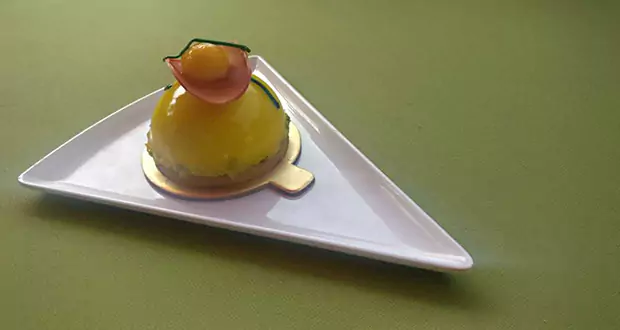

FOOD VIBES
DEVELOPHOW-TO
I'm not a chef. But I'm passionate about food - the tradition of it, cooking it, and sharing it

How to make Garlic Soya Chicken
CHINESE BY DIVYA BURMAN

Easy Caponata
ITALIAN BY CARMENCITA
Caponata is a Sicilian dish with eggplant, zucchini, tomato, and peppers traditionally cooked in oil and vinegar and flavored with sugar, raisins, capers, olives, and pine nuts. It's tangy, sweet, crunchy, and salty all at the same time. Serve at room temperature as a side dish to grilled fish or as a starter on toasted bread. Store leftovers in fridge and reheat gently. It will taste even better the next day!
Chole Bhature
NORTH INDIAN BY DASSANA AMIT
LEARN HOW-TO
-
SOUTH INDIAN DOSA
A popular South Indian thin crepe that is made of fermented rice and lentil batter. History of dosa says that they were made using only rice but with the passage of time, people started to add urad dal / black lentils to give texture and taste. Dosas became very popular with the rise of udupi restaurants which serve the best dosa varieties – plain, set and masala dosa.
-
CHINESE CHOW MEIN
A delicious quick and easy weeknight dinner idea. You can adjust the ingredients to add more vegetables or if you want you can also break an egg into the wok and scramble it before you add the noodles to make the chow mein. You need to make sure to keep your cut vegetables and your sauce ready, so that you can prepare the chow mein quickly and easily.
-
SOUTH INDIAN CHICKEN SUKKA
A Mangalorean special chicken recipe, made using fresh chicken, host of masalas and grated fresh coconut cooked to perfection. it is a dry dish that can make any dinner party menu look exotic.
SALADS ZESTY SMOKED SALMON WITH AVOCADO TOMATO SALAD
A fulfilling, healthy salad that would fill your palate for the rest of the day. The major flavours in this salad are the salmon, creamy avocado and zesty lemon dressing. It’s got enough energy to keep you going all through the day and contains a great amount of protein and fibre whilst still being super low on carbs – so basically it’s the perfect healthy lunch!
Popular Recipes
-  DESSSERTS MANGO DOME WITH STRAWBERRY JELLY Mango Dome with strawberry Jelly is a delicious combination of the summer favourite Mango and the juicy strawberries. A luscious mango dessert you just wouldn't be able to resist!
- NORTH INDIAN PANEER BUTTER MASALA A delicious and rich butter based paneer dish, cooked in a creamy, milk gravy with the goodness of tomato and onion. A perfect dinner party dish so you will never have to think too much about what to cook for vegetarian party! An easy, tasty yet quick paneer recipe with aroma that will instantly palpitate your taste buds.
- DESSSERTS WALNUT HALWA Ground walnuts along with cucumber seeds are roasted with milk, sugar, cardamom and saffron to get a scrumptious serving of Halwa. Just the perfect Indian dessert post-dinner!
- ITALIAN MORNING GREED Open sandwich, piled high with smashed mint peas, ricotta, smoked salmon caper berry & sour cream